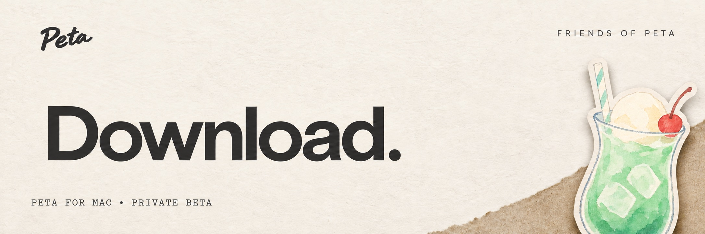
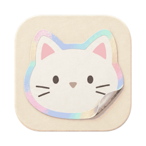

SOMETHING GOOD TO BRING HOME.
A little something
for your desktop.
Turn your favorite photos into stickers.
Keep a few close. Send a few to a friend.

Peta for Mac
Private beta
Checking for the latest version…
THE FIRST TIME YOU OPEN IT
This beta isn’t checked by Apple yet, so your Mac asks once.
- Open Peta from Applications. When macOS says it can’t verify Peta, choose Done.
- Open System Settings → Privacy & Security, scroll down, and choose Open Anyway next to Peta.
- Confirm with your Mac’s password. Peta opens. You’ll do this again after each update.
YOUR INVITE CODE
Enter it the first time you open Peta. It works on one Mac at a time.
Made for this little circle.
Please keep the app, your code and this link between invited friends.
MAKE YOURSELF AT HOME.
Just a little move.
- 01
Open the download.
Double-click the Peta disk image.
- 02
Make a little room.
Drag Peta into Applications, then eject the disk image.
- 03
Make it yours.
Open Peta from Applications and enter your invite code.
A FEW SMALL NOTES.
Before you settle in.
Peta is still in beta.
Keep your own copies of photos and work you want to save.
Is this beta open to everyone?
For now, Peta is shared with invited friends. Please keep the app, your invite code and this page within this circle. Each code works on one Mac.
I got a new Mac.
Use “Get a new code” above, then enter the new code on the new Mac. Your old Mac stops connecting to friends until it gets a code again.
What if I need a hand?
Drop a note in #help in the Peta Discord. You can write in whichever language feels easiest.
Found something not quite right?
Tell us in #bugs in the Peta Discord. A few words about what happened and your app version are a good place to start.